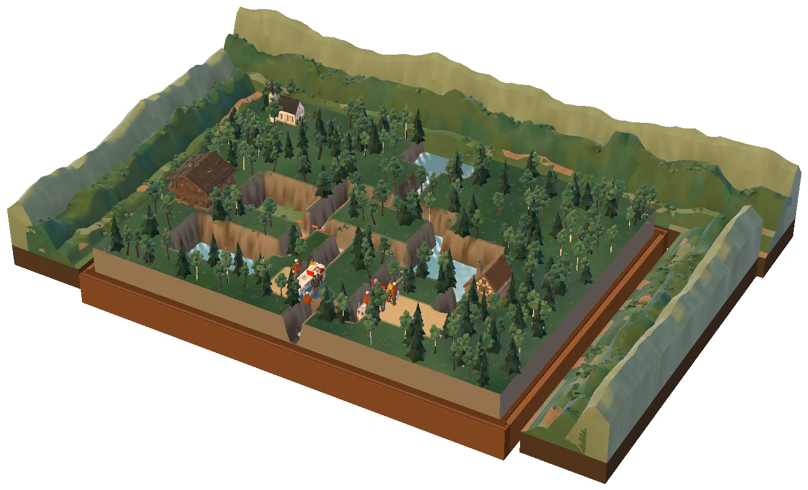
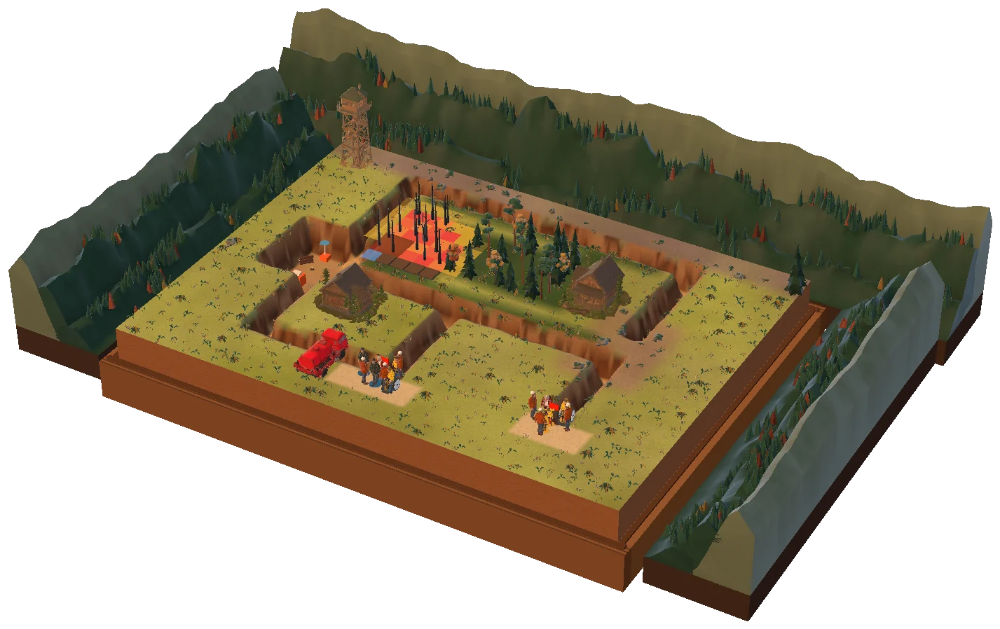

Mission select
Five worlds
Each valley teaches one kind of danger, and later missions combine them. Every map, number and timing below comes from the game's mission files.
01 / 05 · Floods
Alder Valley
A stepped river valley with cedar houses, terraced fields, a stone viaduct, a bright rescue depot, and a mountain reservoir.

First mission · First Crossing · 6:00
- 1:00Reservoir inflow increases
- 2:20Low-dock water rises toward closure threshold
- 4:00Final moderate surge tests the placed barrier
8 residents, 2 step-free · 12 supply · Emergency Bridge ×1, Flood Barrier ×2, Rescue Boat ×1, Beacon ×1
Two ways to win
A Bridge the bus crossing, divert water west, then skiff the dock group.
B Divert first, skiff the low dock, then build the bridge before the last surge.
What you learn
Redirect water without transferring danger onto an evacuation route.
Afterwards
A repaired bridge carries the bus past a dry village square. The final postcard animates a river lantern festival.
M1
First Crossing
Learn bridge placement, flood forecasts, and a first boat route.
M2
The Lower Road
Understand downstream consequences and dry power placement.
M3
Two Banks
Allocate transport capacity between separated groups.
M4
Power Before Water
Trade early protection against immediate evacuation.
M5
The Long Way Home
Combine flow, power, routing, and a deliberate equipment tradeoff.
02 / 05 · Wildfire
Emberwood
An inhabited forest reserve with a lookout tower, sawmill, campsite, orchard, and hillside water tanks.

First mission · A Line in the Trees · 6:00
- 0:50A marked dry-cell cluster ignites
- 2:40Steady wind advances heat toward the short path
- 4:20The first cooled strip becomes safe to cross
10 residents, 2 step-free · 13 supply · Firebreak ×2, Sprinkler ×1, Generator ×1, Beacon ×3
Two ways to win
A Break the nearest fuel strip and wet the approach.
B Defend the longer path and stage the campsite first.
What you learn
Create defensible transport routes by managing fuel, water, power, and forecast wind.
Afterwards
Rain arrives after stabilization, not as a deus ex machina that solves the mission. Residents replant the cleared strip.
M1
A Line in the Trees
Learn fuel removal and moisture.
M2
Last Bus from Camp
Coordinate finite ground transport capacity.
M3
Water Is a Route
Make water supply and transport choices interact.
M4
When the Wind Turns
Anticipate forecast direction changes.
M5
The Green Corridor
Maintain a living evacuation corridor through a combined burn.
03 / 05 · Snow and avalanches
Frostline
A snow-covered alpine settlement with a funicular, weather observatory, cable station, avalanche fences, and steep terraces.

First mission · Hold the Station · 6:00
- 1:00A support begins losing stability
- 2:40Meltwater increases load
- 4:20A minor tremor tests bracing
10 residents, 2 step-free · 14 supply · Brace ×3, Cable Winch ×1, Generator ×1, Beacon ×2
Two ways to win
A Brace the weak support and winch the upper group.
B Evacuate the upper group early, then stabilize for the remaining transfer.
What you learn
Stabilize selected structures and schedule vertical rescue before runout paths close.
Afterwards
The funicular returns to service, carrying supplies rather than a compulsory victory cutscene.
M1
Hold the Station
Introduce structure-specific support and vertical transfers.
M2
Above the Snowline
Manage independent rescue links and power.
M3
The Quiet Slope
Read runout zones and preserve a secondary route.
M4
Cable and Current
Combine snow support and flooding power platforms.
M5
Dawn at Frostline
Coordinate a complete mountain evacuation.
04 / 05 · Tides and storm power
Tidemark
A fictional coastal archipelago with pale plaster houses, boatyards, a lighthouse, raised walkways, and a tidal market.

First mission · Between Two Tides · 7:00
- 1:00Tide begins rising
- 3:00Causeway closes
- 5:00High landing becomes optimal for unloading
12 residents, 2 step-free · 15 supply · Rescue Boat ×2, Emergency Bridge ×1, Beacon ×2, Power Relay ×1
Two ways to win
A Walk the nearest group early and ferry the late group.
B Use both boats from the beginning and reserve the bridge for the high route.
What you learn
Exploit safe tide windows and keep the power network dry while coordinating multiple transport legs.
Afterwards
The lighthouse sweeps across safe harbor and the floating market reopens.
M1
Between Two Tides
Learn readable tide windows.
M2
Keep the Light
Keep a dry power route while transporting residents.
M3
The Floating Market
Handle multiple pickups and staging capacity.
M4
Storm Switch
Combine rain inflow and sea-level changes.
M5
Harbor of Everyone
Master transport, tide windows, and power topology.
05 / 05 · Lava and heat
Cinder Reach
A volcanic island research town with basalt terraces, a geothermal station, orchards, a ferry terminal, and cooling channels.

First mission · A Path Through Heat · 7:00
- 1:10Lava advances into a marked channel
- 3:30First cooling opportunity appears
- 5:30Cooled segment begins reheating
12 residents, 2 step-free · 16 supply · Lava Cooler ×2, Emergency Bridge ×1, Beacon ×3, Heat Shelter ×1
Two ways to win
A Cool a crossing only when residents are ready to move.
B Stage residents in shelter, cool the longer route, then cross together.
What you learn
Trade temporary protection against permanent evacuation while slow hazards remove routes.
Afterwards
The rescue fleet leaves together; recovered residents send postcards from every earlier world.
M1
A Path Through Heat
Introduce temporary cooled crossings.
M2
Borrowed Safety
Use refuge as a temporary logistics tool, not a destination.
M3
The Cooling Works
Protect coolant logistics and power.
M4
Three Ways Out
Choose among sea, road, and temporary crossings.
M5
Every Little Life
Final combined-system rescue with meaningful priorities.